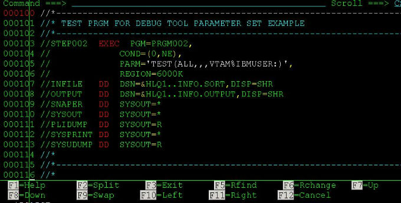

IBM DebugTool中巧用GOTO调试程序
最近接触IBM DebugTool比较多，再说一个在mainframe上面调试COBOL或者PL/I程序的技巧吧。
经常在用IBM DebugTool或者DTCN调试程序的时候，造测试数据很不容易。如果调试过程中发现这次数据没有造成功，我们没有必要每次都退出全部程序重新造数据，可以巧妙地利用“GOTO”语句，随心所欲地在程序里面跳转。
比如下面这一个程序段，在调试过程中我们可以在Call黑盒子程序BLACKBOX的前后都设置一个断点，即9178行以及9202行都设置一个断点，如果我们发现程序跑到了9202行但是返回码不是我们想要的结果，那么运行“GOTO 9178” 即可重新回到Call黑盒子之前，无限反复尝试，重新造数据，直到成功！
SOURCE: TESTPGM1 --1----+----2----+----3----+----4----+----5 LINE: 9178 OF 15895
0020 01 WS-FIELDS.
0021 05 WS-CALLED-PGM ...IBM DebugTool的Source Identification Panel
IBM DebugTool，在debug过程中可以按PF4键，或者输入命令:
SOURCE or LIST
这时就会显示Source Identification Panel面板，在这里即可得知您当前正在debug的所有程序(Compile Unit)的详细路径。知道了它们都是从哪一个loadlib取到的,这确实对调试很有帮助。
Source Identification Panel
Command ===>
Compile Unit Listing/Source File Display
------------------------- -------------------------------------------- -------
TESTPGM1 IBMUSER.TEST.LOAD.LIB1(TETPGM1) Y
TESTPGM2 IBMUSER.TEST.LOAD.LIB2(TETPGM2) Y
TESTPGM3 IBMUSER.TEST.LOAD.LIB3(TETPGM3 ...IBM DebugTool: 主动终止调试
在debug程序的过程中，如果已经知道了出错的原因不想再继续debug下去，但是又不希望按PF9使程序继续正常执行完(因为这样程序会把你辛辛苦苦造好的测试数据给消耗掉)。这时候，你可以在COMMAND栏输入：
more ...trigger overflow
这样程序就会被当成正常溢出抛异常处理，你的测试数据就不会被消耗掉。除了
overflow，其他异常终止的event也可以，比如数据转换异常这样的event。
IBM Debug Tool使用
关于IBM DebugTool的一些介绍，请参照我的另一篇博文：<IBM Debug Tool来调试PL/I或者COBOL程序的时候都有哪些命令或者说按键可以用，比如说设置断点，运行至断点处，监视变量值啊什么的这种一般不管什么程序的调试都会用到的知识。当然，这本身很简单，写在这里只是为了让新人更快的学会使用，基本上10分钟搞定的那种，这样就节省了大家的时间了。
先上个IBM DebugTool的截图：

可以看到，最上面一行显示了当前debug的程序名字PRGM002以及所用的语言PL/I,接着是命令行COMMAND,所有的调试命令都在这一行输入。然后是变量监视区域(MONITOR)，源程序区(SOURCE)以及调试日志(LOG)区域。Debug Tool遵循“七上八下”原则，也就是F7向上翻页，F8向下翻页。
执行下一条语句
按 ...
more ...Debug Tool for z/OS
作为一个PL/I、COBOL程序猿，调试程序是必须的一项技能。这里我来说说大机上面的调试工具IBM的DebugTool，它支持的环境包括BATCH, TSO, CICS, DB2, DB2存储过程以及UNIX等等。
这篇我来说说如何设置让程序可以被Debug
首先，你必须在编译程序的时候需要选择以Debug模式编译，这个在changeman里面直接在编译的时候选个IBM Debug Tool="Y"就可以了。
接着，如果是BATCH的，就需要在JCL的PARM中指定TEST运行时的参数，通过VTAM接口来初始化debug模式，VTAM%后面跟着的是userid，就像这样： 
是BATCH的话，你还要有一个Debug的session，这个可以参照我的另外一篇博文：<<登陆大型机——Aviva的介绍>>，只需注意在建debug session的时候destination的IP一般和普通大机的物理ip是不一样。填上正确的ip,然后用你的id登陆,这里我的id是IBMUSER，须跟上面设置的一样。
回到JCL这边，submit，那恭喜你，你就可以看到Debugtool的画面了:
但是，如果程序是ONLINE的话，一般我们用CICS上面的DTCN这个工具来debug的。这里我假设你已经在上面“首先”里面正确编译了一个ONLINE的程序PRGM002 (带debug编译选项的)。然后，你登陆CICS ...
more ...